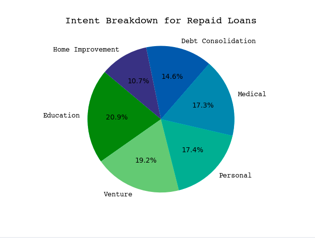
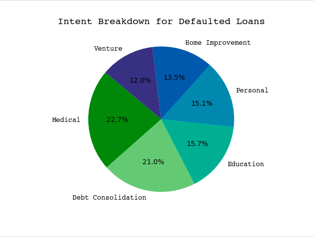
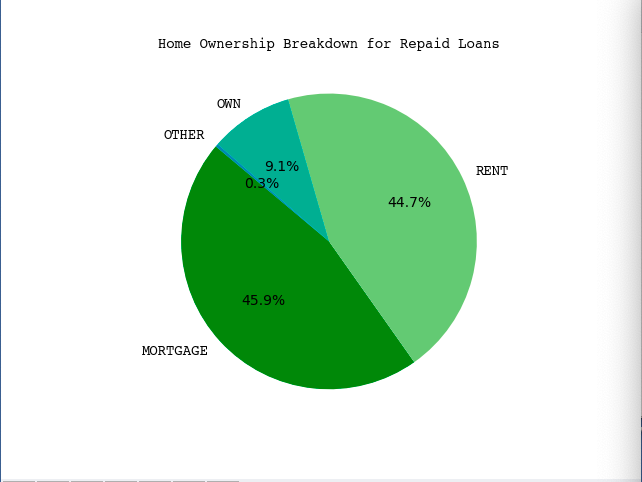
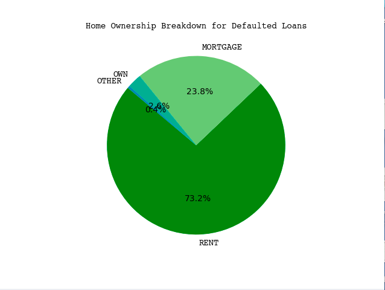
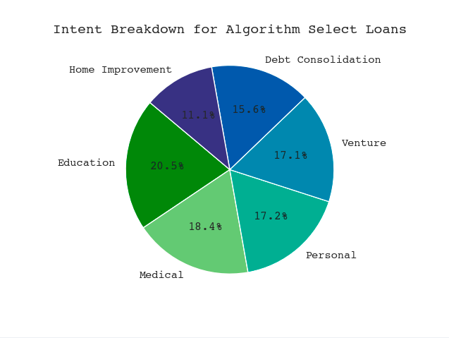
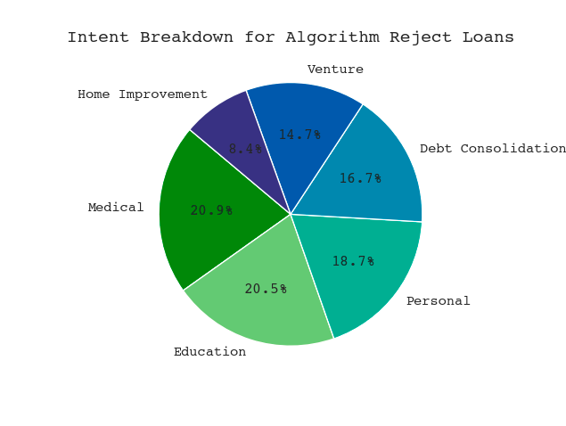
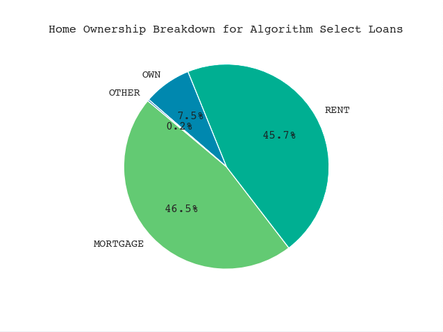
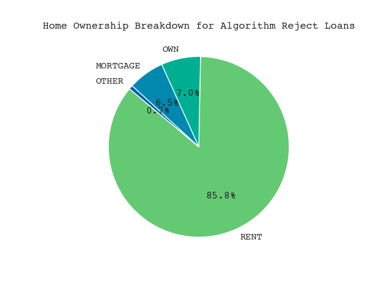

creditTest["loan_amnt"] * (1 + percentProfit * .01 * creditTest["loan_int_rate"])**10 - creditTest["loan_amnt"] (REPAID)
creditTest["loan_amnt"]* (1 + percentProfit * .01 * creditTest["loan_int_rate"])**3 - 1.7 * creditTest["loan_amnt"] (DEFAULT)
Optimal Decision Making
Introduction
The primary way through which a bank makes money is a loan. The bank will lend you some sum of money which you then must pay back over duration of the loan period, plus some interest. However, sometimes individuals may not be able to pay back their loan, causing them to default. Choosing who gets a loan is then a pivotal component of the bank’s profitability.
Today, we will try to automate this process using a scoring function with a minimum threshold. We will design a profit maximizing algorithm, analyze its performance, and investigate its demographic impact.
Data Analysis
Let’s take a look at the data! First, let’s see what type of people are defaulting on their loans. While there are many features in the dataframe that we might use to extrapolate on demographic information, there are three of interest. First, is loan intent, which is subdevided into Venture, Education, Medical, Home Improvement, Personal, and Debt Consolidation.


Loan Intent by Loan Status
Running a chi square test on the data returns Chi Square Statistic of approximately 368 with confidence approximately 2.1114918454052173e-77. Clearly, whether or not someone defaults on their loans impacts the distriubtion of loan intent. However, a quick look at the charts reveals that the per-cateogry difference is plus/minus a few percents. For our purposes, this does not indicate a clear bias, and we may confirm this in the correlation matrix: Indeed, the correlation between loan status and loan intent is .09. However, this information will be useful when assessing algorithm performance.
Next, we’ll take a look at loan amount subdevided by defaults. This will be particularly useful when assessing algorithm profitability.

A quick glance at the histogram shows that amount seems to have a negligiable impact on defaults. Again, we may confirm this in the correlation matrix: loan amount has a .1 positive correlation with defaults. Finally, let’s look at home ownership. This is subdevided into those with morgages, full home ownership, renters, and an other category.


Interestingly, Renters comprise about 73% of individuals who defaulted on their loans but only 44% of those who repay them. We also see that, combined, home owners and inividuals with morgages make up about 26% of individuals who default, but 55% of individuals who repay their loans. We’ll also run a Chi Square Test on this feature, which results in a Chi-square statistic of approximately 1294 with confidence 2.913582391497053e-280! This makes qualitative sense: Individuals that own property are more likely to own assets, and be able to leverage said assets (home, financial, or otherwise) to repay loans. Homeownership also has a positive .22 correlation with loan status.
Feature Selection and Model Training
There are two clear candiate features to train on the model: Loan Percent of Income and Deafult on File. If one takes out a loan that is a greater percent of yearly, income, it can be hard for them to pay it back along with other expenses. Moreover, if one defaults on their loan for some reason, we can assume that they are likely to do it again in the future. These features have positive correlation with loans status of .38 and .14 respectively.
From, our initial exploration, we also found that home ownership impacts loan repayment. How does it stack up against the loan’s percent of an individuals income? For convient analysis, call a loan amont that is greater than 50% of one’s income “high risk” and the converse “low risk”. We can then subdevide our dataset into into high risk loans and low risk, and look at the frequnecy of homeownership type in each.


Homeownership Breakdown For Repaid and Defaulted Loans
loanPercentHomeownershipBAD.jpg
We see that renters make up a larger portion of high risk loans. This observation lends some insight to our initial finding: Perhaps renters may also be more likely to default on their loans since they are more likely to take out loans that are a higher percent of their income.
For our model, we use logistic regression, and we’ll train on the features discussed (.e.g Loan Percent Income, Default on File, and Homeownership Type). This yields on accuracy of 84% on the testing data–well within industry standards and acceptable for a simple regression model.
Profit Optmization
This is where the fun begins. First, let’s define a simple profit model for the bank. If an individual is able to repay their loan, let’s assume they did so over a 10 year period. On the other hand, if an individual defaults on their loan, we’ll assume that this occured after a 3 year period. We’ll also assume that the bank’s operating cost is 75% of the loan profit, to add some spice to our data (we don’t want to make things too easy). This leads to the following equations:
\[ REPAID = PRINCIPLE \cdot (1 + INTEREST)^{10} - PRINCIPLE \] \[DEFAULTED = PRINCIPLE \cdot (1 + INTEREST)^3 - PRINCIPLE\]
We’ll use these equations to create a profit and loss column – denoted PnL –in both our training and testing data. We can do this as follows:
Next, we’ll define a theoretical portfolio of loans to benchmark our algorithm’s performance. We do this by adding a loan to our portfolio in the testing set if and only if the PnL is positive. The sum of these loans is the maximum possible profit the bank can make. We can find this as follows:
theoreticalPNL = creditTest.loc[creditTest['PnL'] > 0, 'PnL'].sum()Now we need to find our threshold. Rather than use the actual weights from the model, a more elegant solution is to simply look at the probability score the regression assigns to each entry. We can add this column to both the training and test set:
credit["probability_score"] = LR.predict_proba(credit[interestingFeatures])[:, 1]
creditTest["probability_score"] = LR.predict_proba(creditTest[interestingFeatures])[:, 1]With the stage set, we can now design a tresholding algorithm. Ideally, we would like to transform this to a a calc I optmization problem where we have have profit \(P\) as a function of the treshold \(T\). To do this, we’ll discretize \(T\)’s domain by some constant \(\Delta\). For each \(T\) value, we lend money if and only if the probability score is less than the treshold. We’ll the calculate PnL for the loans made, and record it as a function of \(T\).
There are two problems with with this approach. First, is time complexity. If \(D\) is the length of the data frame and \(\Delta\) the descritizeation constant, this algorithm runs in \(O(D \cdot \Delta)\). While I can run this code on my 2016 macbook in under minutes, for larger datasets with more complex calcuations, this is bad practice. A more pressing issue is overfitting. By taking the optima of a single sample (e.g. the training data), we may maximize for the sample but not for potential data in the population (e.g. the trianing set).
To remedy these issues, we’ll take \(n\) sample of size \(k\), for each of which we will record the \(T\) value the maximizes profit. We then define a new statistic, call it \(T^*\), which is the mean of the sample maxizes (Thanks central limit theorem!). Notice that \(n \cdot k < D \Longrightarrow n \cdot k \cdot \Delta < D \cdot \Delta\), we can theoretically accomplish this more quickly then the aforementioned method. This method is also quite emperically accurate at treshold determination for \(n,k\) small. This is acomplished with the following functions:
def sampleMaxProfit(credit, n, k, scoreRange):
#samples size n from df credit.
#tests tresholds across
T = scoreRange[0]
maxTuple = [0, 0]
sample = credit.sample(n)
delta_T = (abs(scoreRange[1] - scoreRange[0]))/k
while T < scoreRange[1]: #can we do this without a loop?
PnL = sample.loc[sample['probability_score'] <= T, 'PnL'].sum()
if (PnL > maxTuple[0]):
maxTuple = [PnL, T]
T += delta_T
return maxTuple[1]
def optimalProfitScore(credit, iterations, n, k):
#Finds treshold score T that optmizes profit
testResult = []
scoreRange = [credit["probability_score"].min(), credit["probability_score"].max()]
for i in range(0, iterations):
testResult.append(sampleMaxProfit(credit, n, k, scoreRange))
npTestResult = np.array(testResult)
return np.mean(npTestResult)Which produces the following result:

Notice that our method (in orange) under estimates the optimal treshold value. This is because there is bias associated with our estimator. We can remedy this by multiplyiing by a proportionality constant. This works out to be about \(1.05\). The resulting curves look better for both the training and testing set:


Profit Curves.
The threshold value that maximize profit is 0.455 for both the training (right) and testing (left) set. Running the algorithm with 200 trials with sample size of 100 – which is less than the length of the data set at 22,000 – we recieve a treshold of 0.445.
Evaluation - Bank
Time to put our top hats on. We’ll start by comparing the results of the algorithm against the theoretical loan portfolio. Our model has an accuracy of around 84%. The theoretical PnL is $12634399.24, the Model PnL is $7476722.014, and the Tresholded PnL is $7850920.35. Here Model PnL is the profit and loss if we use the model’s threshold. The Tresholded PnL is the profit and loss if we use our treshold. Using the tresholded PnL produces a 5% increase in profitability. However, both predictive methods capture just north of 60% of potential profits. While profit and is not a linear function of accuracy, if we assigned loan amounts reflecteive of the population to the 80% of the data we predicted correctly, we might expect it to be closer to 80% of thoeretical profits. This obseration suggests two, not-necessarily-mutually-exclusive possibilities. First, the algorithm is not giving loans to to high value loans. This would mean that we are leaving gainz on the table. Second, the algorithm is giving high value loans to people who are defaulting, which would puts a downward pressure on profit. Let’s investigate.
First, we’ll partition the data set into individuals selected for a laon and individuals whose loan request is rejected. Call these categories Algorithm-Select and Algorithm-Reject repsectively. First, we consider defaults.


Loan Defaults for Alorithm Selections and Rejections
Of those individuals who defaulted on their loans, the average loss for Algorithm-Select is $-5179. For the same default population, the average loss for Algorithm-Reject is $-8795. We also see that the loss histogram left-skewed for the Algorithm-Select, whereas it is centered farther form 0 for Algorithm-Reject. This suggests that the algorithm, on average, the Algorithm is doing a good job of not loosing money via defaults.
We now consider repayments.


Loan Repayments for Alorithm Selections and Rejections
Again, of those individuals who reapid their loans, the average profit for Algorithm-Select is $2713. However the average profit in the Algorithm-Reject group is 5780. We see that the histogram for the Algorith-Select group is right skewed, whereas the histogram for Algorithm-Reject has a mound in $4000 - $6000 dollar range. The algorithm is not extending loans to potentially profitable individuals. Recall that one of the features we trained the model on was loan_percent income. While this was a good predictor of loan defaults, it (unsuprislingly) also has a positive correlation with loan amount for both default and repay groups.

This can make it difficult for our algorithm to correctly appraise high value loans leading to unrealized gains. Notice that for our given feature selection, we did maximize for profit. However, this was only for a single set of features. In that sense, this is question of model accuracy rather than optmization. Given the overlapping nature of the features in the data set, it is unlikely that this is case. Considering our algorithm is profitable, I would say that it recieves a satisfactory grade from the bank.
Evaluation - Demographic Impact
We’ll now investigate the impact the model has on potential borrowers. We’ll use the same features we discussed at the beggining. First, lets look at loan intent breakdown.


Loan Intent Breakdown for Algorithm Selections and Rejections.
Again, we see that their certainly is a change in the distriubtion. However, these changes are relatively minimal, which does not suggest that the algorithm is bias against loan intent. Looking at homeownership, we see that this tells a different story.


Homeownership Type for Algorithm Selections and Rejections
We see that renters compose of 45.8% of Individuals seleclted for a loan, but 84.9% of individuals whose loan application was rejected. Individuals with morgages or who own homes make up about half of all loan selections, and around 14% of all loan rejections. If we make the same chart on the testing data, but instead look at historic defaults and repayments, we see that renters make up about 73% of individuals who default on their loans. Homeowners and invividuals with morgages make up about a quarter of loan defaults. Clearly, the algorithm we designed has made it harder for renters to get loans, thereby exascerbating existing inequality.
Moreover, looking at the loan percent income by selection type used in the anlaysis for the bank, we see that our algorithm tends to select Individuals where loans are a lower portion of income. Commodities like healthcare and education tend to have a fixed, absolute cost regardless of economic background. Hence, this can make it harder for less afluent individuals to achieve wellbeing and economic advancement. This is confirmed looking at the mean income which is $70074 and $42644 for select and rejection groups respectively. Perhaps even more paradoxically, if homeownership / mortgage is a critical component in recieving a loan, how can we expect renters to own homes if they cannot recieve a loan to buy one in the first place?
Given this information, we might think that profitability is at odds with social responsibility (i.e. equality in loan extension). The synthesis here is notice that the bank left some profit on the table–some of which could be gained by lending to a more diverse group with respect to ownership type. Perhaps we need more features that partition the dataset, or a better model through which the data can be trained on. Or perhaps we should not be doing machine learning here at all. Maybe numbers will never represent abstract notions of trustworthiness and interpersonal relations. A question for another time (or blog post?).